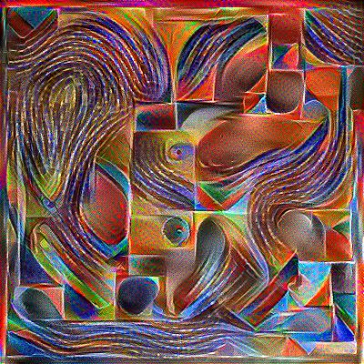
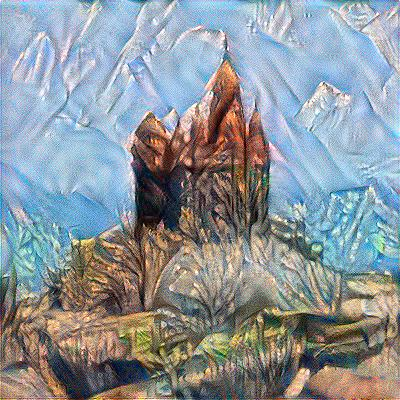

Neural Style Transfer

Context
This is a deep learning algorithm called Neural Style Transfer that takes a content image and a style image as input and returns a new artistic image. To carry out the project, I have recycled a Convolutional Neural Network that has been used in the past for another purpose through a method called transfer learning. Some tools I have used were TensorFlow, Numpy and Pandas. If you want to know more details about the code, you can check it on my GitHub.
Content

Style

New image

Content

Style

New image
